20.37 NORMFORM: Computation of
Matrix Normal Forms
This package contains routines for computing the following normal forms of matrices:
- smithex_int
- smithex
- frobenius
- ratjordan
- jordansymbolic
- jordan.
Author: Matt Rebbeck.
20.37.1 Introduction
When are two given matrices similar? Similar matrices have the same trace, determinant,
characteristic polynomial, and eigenvalues, but the matrices
|
𝒰 = 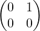 and 𝒱 = 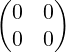
|
are the same in all four of the above but are not similar. Otherwise there could exist a
nonsingular 𝒩∈M2 (the set of all 2 × 2 matrices) such that 𝒰 = 𝒩𝒱𝒩−1 = 𝒩0𝒩−1 = 0 ,
which is a contradiction since 𝒰≠0 .
Two matrices can look very different but still be similar. One approach to determining
whether two given matrices are similar is to compute the normal form of them. If both
matrices reduce to the same normal form they must be similar.
NORMFORM is a package for computing the following normal forms of matrices:
- smithex
- smithex_int
- frobenius
- ratjordan
- jordansymbolic
- jordan
By default all calculations are carried out in Q (the rational numbers). For smithex,
frobenius, ratjordan, jordansymbolic, and jordan, this field can be
extended. Details are given in the respective sections.
The frobenius, ratjordan, and jordansymbolic normal forms can
also be computed in a modular base. Again, details are given in the respective
sections.
The algorithms for each routine are contained in the source code.
NORMFORM has been converted from the normform and Normform packages written by
T. M. L. Mulders and A. H. M. Levelt. These have been implemented in Maple
[CGG+91].
20.37.2 Smith normal form
-
Function
smithex(𝒜,x) computes the Smith normal form 𝒮 of the matrix 𝒜.
It returns {𝒮,𝒫,𝒫−1} where 𝒮,𝒫, and 𝒫−1 are such that 𝒫𝒮𝒫−1 = 𝒜.
𝒜 is a rectangular matrix of univariate polynomials in x.
x is the variable name.
-
Field extensions
Calculations are performed in Q. To extend this field the ARNUM package
can be used. For details see subsection 20.37.8.
-
Synopsis:
-
-
Example:
-
|
smithex(𝒜,x) = 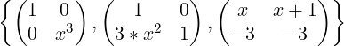
|
20.37.3 smithex_int
-
Function
Given an n by m rectangular matrix 𝒜 that contains only integer entries,
smithex_int(𝒜) computes the Smith normal form 𝒮 of 𝒜.
It returns {𝒮,𝒫,𝒫−1} where 𝒮, 𝒫, and 𝒫−1 are such that 𝒫𝒮𝒫−1 = 𝒜.
-
Synopsis
-
-
Example
-
20.37.4 frobenius
-
Function
frobenius(𝒜) computes the Frobenius normal form ℱ of the matrix 𝒜.
It returns {ℱ,𝒫,𝒫−1} where ℱ, 𝒫, and 𝒫−1 are such that 𝒫ℱ𝒫−1 = 𝒜.
𝒜 is a square matrix.
-
Field extensions
Calculations are performed in Q. To extend this field the ARNUM package
can be used. For details see subsection 20.37.8
-
Modular arithmetic
frobenius can be calculated in a modular base. For details see subsection
20.37.9.
-
Synopsis
-
- ℱ has the following structure:
where the 𝒞(pi)’s are companion matrices associated with polynomials
p1,p2,…,pk, with the property that pi divides pi+1 for i = 1…k−1. All
unmarked entries are zero.
- The Frobenius normal form defined in this way is unique (ie: if we
require that pi divides pi+1 as above).
-
Example
-
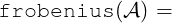
20.37.5 ratjordan
-
Function
ratjordan(𝒜) computes the rational Jordan normal form ℛ of the matrix
𝒜.
It returns {ℛ,𝒫,𝒫−1} where ℛ, 𝒫, and 𝒫−1 are such that 𝒫ℛ𝒫−1 = 𝒜.
𝒜 is a square matrix.
-
Field extensions
Calculations are performed in Q. To extend this field the ARNUM package
can be used. For details see subsection 20.37.8.
-
Modular arithmetic
ratjordan can be calculated in a modular base. For details see subsection
20.37.9.
-
Synopsis
-
- ℛ has the following structure:
The rij’s have the following shape:
where there are eij times 𝒞(p) blocks along the diagonal and 𝒞(p) is
the companion matrix associated with the irreducible polynomial p. All
unmarked entries are zero.
-
Example
-
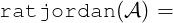
20.37.6 jordansymbolic
-
Function
jordansymbolic(𝒜) computes the Jordan normal form 𝒥 of the matrix
𝒜.
It returns {𝒥,ℒ,𝒫,𝒫−1}, where 𝒥 , 𝒫, and 𝒫−1 are such that 𝒫𝒥𝒫−1 =
𝒜. ℒ = {ll,ξ}, where ξ is a name and ll is a list of irreducible factors of
p(ξ).
𝒜 is a square matrix.
-
Field extensions
Calculations are performed in Q. To extend this field the ARNUM package
can be used. For details see subsection 20.37.8.
-
Modular arithmetic
jordansymbolic can be calculated in a modular base. For details see
subsection 20.37.9.
-
Synopsis
-
- A Jordan block ȷk(λ) is a k by k upper triangular matrix of the
form:
There are k − 1 terms “+1” in the superdiagonal; the scalar λ appears
k times on the main diagonal. All other matrix entries are zero, and
ȷ1(λ) = (λ).
- A Jordan matrix 𝒥 ∈ Mn (the set of all n by n matrices) is a direct sum of
jordan blocks
𝒥 = ,n1 + n2 +  + nk = n + nk = n
|
in which the orders ni may not be distinct and the values λi need not
be distinct.
- Here λ is a zero of the characteristic polynomial p of 𝒜. If p does
not split completely, symbolic names are chosen for the missing zeroes
of p. If, by some means, one knows such missing zeroes, they can
be substituted for the symbolic names. For this, jordansymbolic
actually returns {𝒥,ℒ,𝒫,𝒫−1}. 𝒥 is the Jordan normal form of 𝒜
(using symbolic names if necessary). ℒ = {ll,ξ}, where ξ is a name
and ll is a list of irreducible factors of p(ξ). If symbolic names are used
then ξij is a zero of lli. 𝒫 and 𝒫−1 are as above.
-
Example
-
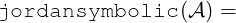
solve(-y^3+xi^2-4*xi+3,xi);
|
{ξ = 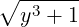 + 2,ξ = −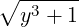 + 2}
|
J = sub({xi(1,1)=sqrt(y^3+1)+2,
xi(1,2)=-sqrt(y^3+1)+2},
first jordansymbolic (A))
20.37.7 jordan
-
Function
jordan(𝒜) computes the Jordan normal form 𝒥 of the matrix 𝒜.
It returns {𝒥,𝒫,𝒫−1}, where 𝒥 , 𝒫, and 𝒫−1 are such that 𝒫𝒥𝒫−1 = 𝒜.
𝒜 is a square matrix.
-
Field extensions
Calculations are performed in Q. To extend this field the ARNUM package
can be used. For details see subsection 20.37.8.
-
Note
In certain polynomial cases the switch fullroots is turned on to compute
the zeroes. This can lead to the calculation taking a long time, as well as the
output being very large. In this case a message
*****
WARNING: fullroots turned on. May take a while.
will be printed. It may be better to kill the calculation and compute
jordansymbolic instead.
-
Synopsis
-
- The Jordan normal form 𝒥 with entries in an algebraic extension of Q
is computed.
- A Jordan block ȷk(λ) is a k by k upper triangular matrix of the
form:
There are k − 1 terms “+1” in the superdiagonal; the scalar λ appears
k times on the main diagonal. All other matrix entries are zero, and
ȷ1(λ) = (λ).
- A Jordan matrix 𝒥 ∈ Mn (the set of all n by n matrices) is a direct sum of
jordan blocks.
|
𝒥 = 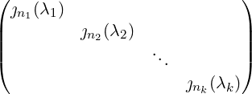 ,n1 + n2 +  + nk = n + nk = n
|
in which the orders ni may not be distinct and the values λi need not
be distinct.
- Here λ is a zero of the characteristic polynomial p of 𝒜. The zeroes
of the characteristic polynomial are computed exactly, if possible.
Otherwise they are approximated by floating point numbers.
-
Example
-
J = first jordan(A);
20.37.8 Algebraic extensions: Using the ARNUM package
The algebraic field Q can now be extended. E.g., defpoly sqrt2**2-2; will
extend it to include
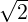
(defined here by sqrt2). The ARNUM package was written by
Eberhard Schrüfer and is described in section 9.12.5.
20.37.8.1 Example
defpoly sqrt2**2-2;
(sqrt2 now changed to  for looks!)
for looks!)
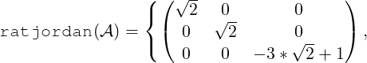
20.37.9 Modular arithmetic
Calculations can be performed in a modular base by setting the switch modular to on.
The base can then be set by setmod p; (p a prime). The normal form will then have
entries in Z∕pZ.
By also switching on balanced_mod the output will be shown using a symmetric
modular representation.
Information on this modular manipulation can be found in section 9.12.3.
20.37.9.1 Example
on modular;
setmod 23;
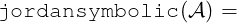
on balanced_mod;